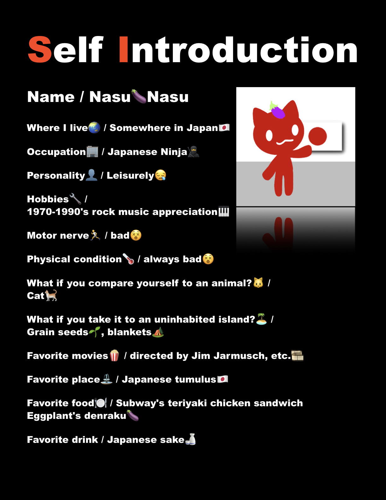

Hello! My name is Nasu🍆Nasu! 😉
I create videos and flyers to share the uniqueness of Japanese culture and cuisine with people around the world. 🌏
I’d like to introduce unique, healthy fermented foods—and ideally other Japanese foods or aspects of Japanese
culture—through short videos and flyers. 🇯🇵🍽️
Please feel free to incorporate them into your daily life in whatever way suits you best.
I use images borrowed from free stock photo sites, as well as materials I’ve drawn or photographed myself, which I edit manually using a stop-motion app.👋🔧
I only use AI for the audio and translation.🌏
For the flyers, I also use AI only for translation; I design them by hand, coming up with the concepts myself.🎨
All my creative activities are made on an old iPhone, and I don't plan to use a PC.📱
It's a slow pace, but if you don't mind, please take a look.
